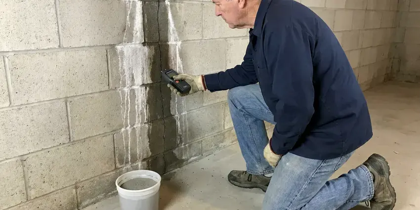

Leak Detection in Pahrump, NV
We locate leaks in walls, slabs, yards and pools across Pahrump, NV using acoustic, thermal and pressure testing tools.
- Modern Technology
- Advanced Detection Technology
- Fast, Accurate Detection
- Expert Local Plumbers

Find the Hidden Leak Before It Finds Your Floors in Pahrump, NV.
Call now to schedule electronic leak detection and get a straight answer on where the water is going.
Your Go-To for Leak Detection in Pahrump, NV
Homeowners in Pahrump trust FMR Plumbing for thorough and non-invasive leak detection. We handle issues caused by shifting soil and fluctuating temperatures, which can stress plumbing systems and lead to unexpected leaks.
Our expertise includes:
- Thermal imaging to trace hot water leaks in slabs and walls
- Gas line leak pinpointing with specialized detectors.
- Detecting slab leaks under concrete foundations.

Additional Plumbing Maintenance Services in Pahrump, NV
Our maintenance and specialty plumbing services in Pahrump, NV protect your home year-round and extend the life of every system.


Customers
Why Choose FMR Plumbing for Leak Detection in Pahrump, NV?
Guessing at a leak location wastes money on holes in the wrong place. Our electronic methods let us mark the leak accurately before any drywall or concrete is touched.
- Save Money, Stopping leaks reduces high water bills and avoids more costly repairs later on.
- Accurate Location, Our technicians use advanced tools like acoustic detectors and thermal cameras to pinpoint leaks without unnecessary demolition.
- Less Damage, Precise locating means smaller repair openings and lower repair costs.
Citywide Coverage
We understand that a plumbing leak can be an emergency, which is why our service extends across all of Pahrump, so residents always have access to professional help when they need it most.
Experienced Team
Our leak detection specialists at FMR Plumbing are highly trained and experienced in identifying even the most challenging leaks. They continuously update their skills on current detection technologies and techniques.
Safety-First Approach
When dealing with potential gas leaks or water damage, our technicians follow strict safety protocols, using proper ventilation and shut-off procedures to prevent any hazards.
Trusted Certified Pahrump Plumbing Services Professionals
At FMR Plumbing, we take pride in providing certified plumbing services throughout Pahrump, NV. Backed by recognized industry credentials, our experienced plumbers combine technical skill with genuine customer care. Whether it is repair, installation, or maintenance, we follow strict safety and quality standards to deliver long-lasting results you can trust.
Call Us Now PHCC Plumbing Contractor Recognition
PHCC Plumbing Contractor Recognition Better Business Bureau (BBB) Accreditation
Better Business Bureau (BBB) Accreditation Angi Certified Pro
Angi Certified Pro ISO 9001 Quality Management Certification
ISO 9001 Quality Management CertificationReliable Leak Detection Services in Pahrump, NV
Emergency Leak Detection in Pahrump, NV
Some leaks simply cannot wait. For urgent situations like burst pipes, sudden drops in water pressure or the smell of gas, FMR Plumbing provides emergency leak detection services in Pahrump, NV. We understand the critical nature of these events and respond promptly to limit damage and keep everyone safe. Our technicians are equipped to handle immediate diagnoses and provide temporary solutions until full repairs can be made.

Hidden Wall and Ceiling Leak Detection in Pahrump
Leaks inside walls and ceilings often show up as stains, bubbling paint, soft drywall or a musty smell. We use thermal cameras to spot temperature differences caused by water, then confirm with moisture meters. Acoustic tools help when the leak is on a pressurized line. Pinpointing the source lets us cut a small, neat access opening.
Pool and Spa Leak Detection in Pahrump
Summer heat and wind can evaporate a lot of pool water, so it can be hard to tell normal loss from a leak. A bucket test compares evaporation to actual water loss. We then pressure test plumbing lines and use dye testing around lights, skimmers and fittings. Finding the leak protects the pool shell and the soil around it.
Main Water Line Leak Detection in Pahrump
The service line between your meter and house can leak underground for months, especially in older galvanized or copper lines. Wet spots in the yard, oddly green grass or a sinking area near the front of the house are clues. We use line tracers to map the pipe and ground microphones to hear the leak. That keeps excavation to a small, targeted hole.
Gas Leak Detection in Pahrump
Gas leaks are very dangerous and require immediate professional attention. FMR Plumbing provides rapid response gas leak detection services using highly sensitive detectors to identify even the smallest gas leaks in your home or business. We prioritize safety and will work quickly to locate the leak, advise on necessary repairs and make sure your gas lines are secure and up to code in Pahrump.
Sewer Line Leak Detection in Pahrump, NV
Sewer line leaks can cause foul odors, slow drains and potential health hazards. Our team uses camera inspections to visually identify breaks, cracks or blockages within your sewer lines. This method allows for accurate location of the leak without guesswork, leading to more efficient and targeted repairs. We repair sewer leaks in all types of piping materials common in Pahrump homes, from PVC to cast iron.
Commercial Leak Detection in Pahrump
FMR Plumbing offers comprehensive leak detection services for commercial properties throughout Pahrump. Businesses cannot afford the downtime or damage caused by undetected leaks. We work efficiently to locate leaks in complex commercial plumbing systems, including large water mains, fire suppression lines and HVAC systems. Our goal is to minimize disruption to your operations while protecting the integrity of your building's plumbing.

Water Leak Detection in Walls & Ceilings in Pahrump, NV
Water leaks behind walls or in ceilings can go unnoticed for long periods, leading to extensive drywall damage, wood rot and mold. We use non-invasive methods like moisture meters, thermal cameras and borescopes to precisely pinpoint the source of these leaks. This approach minimizes the need for destructive investigation, saving you time and money on repairs to your home's interior.
Leak Detection Near Me in Pahrump, NV
Our team is very familiar with the plumbing infrastructure and common leak issues in Pahrump, NV. We're not just a service provider; we're part of the community, committed to offering reliable and trustworthy leak detection services right in your neighborhood. Call us for service that feels local and dependable.
When you suspect a leak, getting a fast answer saves water, money and damage. Our technicians work throughout Pahrump and can usually schedule a test within a day. We bring all of our detection equipment on the initial visit.
FMR Plumbing at a Glance
- Licensed and insured plumbers serving Pahrump, NV
- Same-day appointments and 24/7 emergency response
- Clear written estimates, no hidden fees
- 4.8-star rated by 903+ Nevada customers
Pahrump Map
Pahrump Information
- Population
- 44,738
- Area codes
- Local
- Service area
- Pahrump and communities within 40 miles
- Nearby
- Summerlin South, Las Vegas, Spring Valley, Enterprise
With shifting soil and older housing stock in many parts of Pahrump, NV, professional leak detection is essential for preventing foundation damage and costly repairs. Most homes sit on concrete slabs, so leaks in buried supply lines often show up as damp areas on the floor or higher water bills.
Expert Services
Trust our professionals for reliable FMR Plumbing solutions in Pahrump, NV.
Our Specialized Plumbing Services in Pahrump, NV
At FMR Plumbing, we provide a complete range of plumbing services across Pahrump, NV. From leak detection to full system installations, our team ensures fast, precise, and affordable service for both residential and commercial properties. Explore our core services below:


How Our Leak Detection Service Works in Pahrump, NV
We follow a systematic approach so every leak is precisely located and ready for repair.
Request a Quote
Contact FMR Plumbing by calling (725) 360-1766 to describe your leak concerns. We will schedule a suitable appointment for one of our skilled technicians to visit your property.
On-Site Inspection
Our technician arrives with specialized equipment, performs a thorough visual inspection and uses tools like acoustic detectors or thermal cameras to locate the leak's source.
Diagnosis & Plan
Once the leak is identified, we explain our findings and provide a clear, upfront estimate for the necessary repairs. We go over the best course of action to fix the issue effectively.
Frequently Asked Questions About Leak Detection in Pahrump
The cost of leak detection in Pahrump can range from $250 to $800, depending on the complexity and location of the leak. Factors like slab leaks or those requiring special equipment may be at the higher end. We provide a detailed estimate after our initial assessment.
We use acoustic ground microphones, thermal imaging cameras from brands like FLIR, line tracers, moisture meters and pressure test gauges. Each tool helps confirm a different type of leak. Using several together gives reliable results.
While you can check for obvious leaks, hidden leaks often require professional equipment like acoustic sensors, thermal cameras or tracer gas to locate precisely. A professional plumber will pinpoint the source without needless damage to your home, saving you time and money.
Most residential leak detection appointments take one to three hours. Larger homes, commercial buildings or multiple leaks can take longer. We give you an estimate when we schedule.
To prevent future leaks, consider regular plumbing inspections, especially for older homes. Keep water pressure in a safe range, address any signs of corrosion and maintain your plumbing system. For homes with known issues, proactive repiping or pipe upgrades can be a lasting solution.
Common signs include a sudden spike in your water bill, damp spots on walls or floors, mildew odors, visible mold growth, the sound of running water when no fixtures are in use, or a constantly running water meter even when all water is off.
Yes, FMR Plumbing understands that some leaks are emergencies. We offer fast emergency leak detection services to address critical situations like burst pipes or significant water intrusion, minimizing damage to your property. Call us right away for urgent assistance.
Yes. Repairs we complete after detection carry a written workmanship warranty. Replacement parts include manufacturer coverage.
What People Are Saying About Our Plumbing Experts?

Sofia M.
Two new toilets installed in one visit, no mess left behind, and the tech even adjusted a faucet he noticed was dripping. Fair pricing and really friendly.
Toilet Installation · Winchester, NVLaura S.
I scheduled a water heater replacement, and the team made the process smooth and affordable. The new unit works perfectly, and they cleaned up after completing the job.
Water Heater Replacement · Enterprise, NV
Emily R.
I called FMR Plumbing for plumbing repair, and the technician was fast, polite, and thorough. They explained the problem clearly and fixed it the same day. I will definitely hire them again. Highly recommended!
Plumbing Repair · Enterprise, NV
James P.
Our commercial plumbing system had a leak under the sink, and FMR Plumbing handled it professionally. The plumbers arrived quickly and restored everything without disruption to our customers.
Commercial Plumbing · Las Vegas, NVRobert G.
The trenchless sewer replacement saved our front yard. They walked us through the camera inspection footage first so we knew exactly what we were paying for.
Sewer Line Replacement · Spring Valley, NV
Patricia H.
We had a slab leak that two other companies could not find. FMR Plumbing located it in under an hour, explained our options, and the price matched the quote to the dollar.
Slab Leak Repair · Pahrump, NV